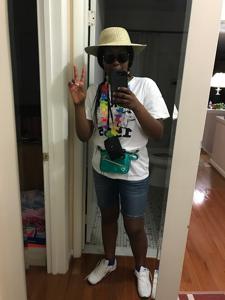

My name is Mattie Diarra. I'm 16 years old and I live in Virginia. I'm orginally from Mali so my family speaks Bambara, French, and English. I'm a rising Senior at Washington-Lee High School. My favorite sports are tennis and soccer. I really like music, airports (travelling), and food. My favorite music artists are Raleigh Ritchie, Majid Jordan, The Internet, J. Cole, and Rihanna.
- I have a dent in my forehead because some girl in elementary school pushed me on the black top while we were playing tag.
- I hate raw apples but I love apple pie, apple sauce, apple juice, and apple flavor things. (raw apples get brown to fast).
- I can't take the sound of metal especially if it's metal to metal contact or metal on teeth or on glass....NASTY.
